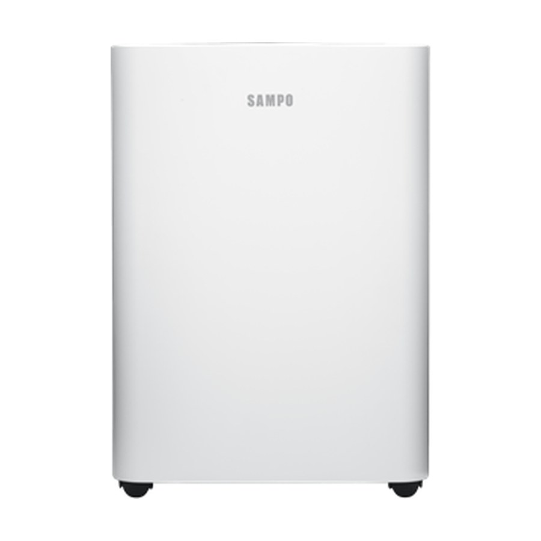
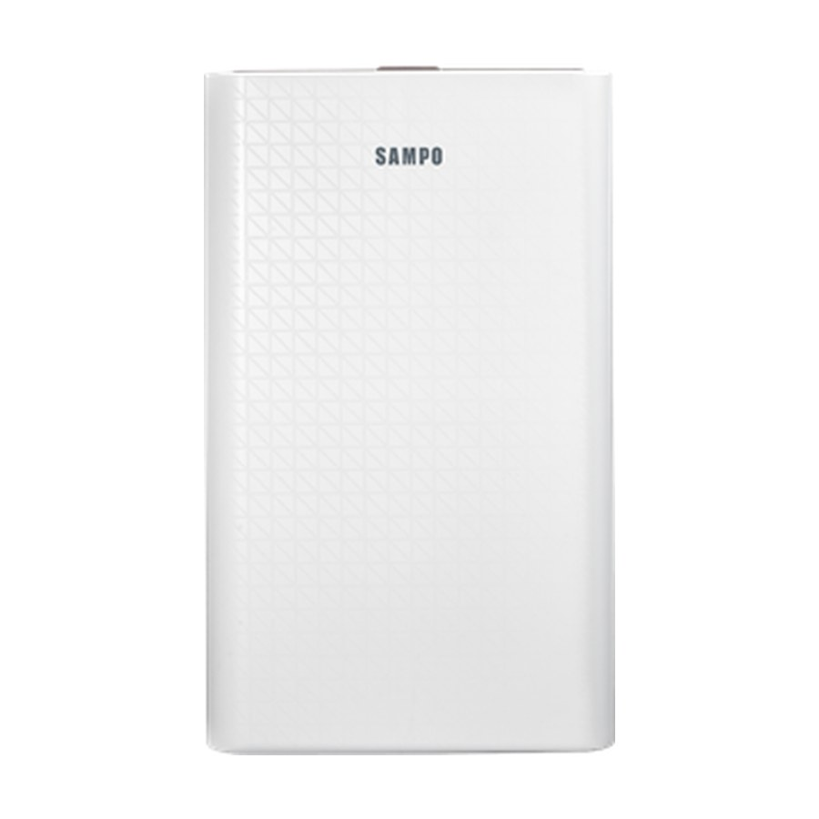
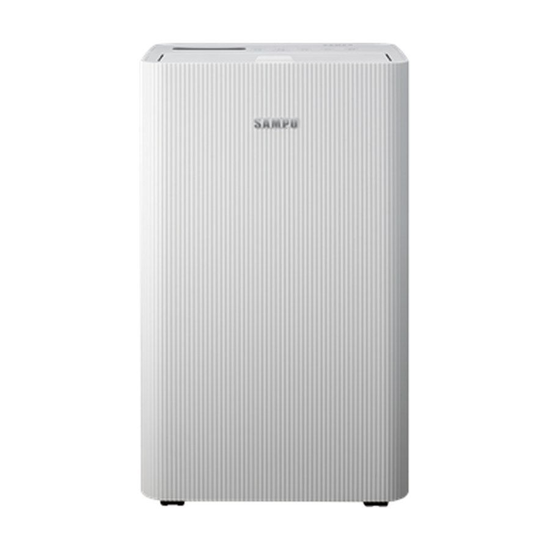
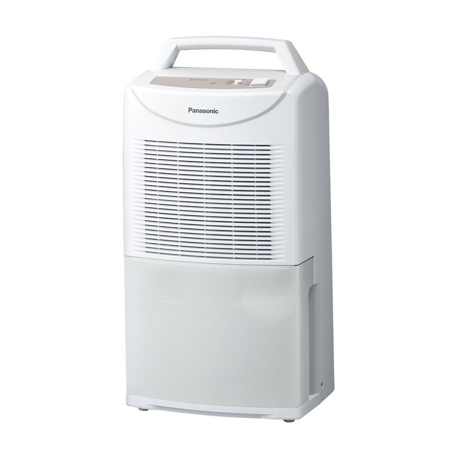
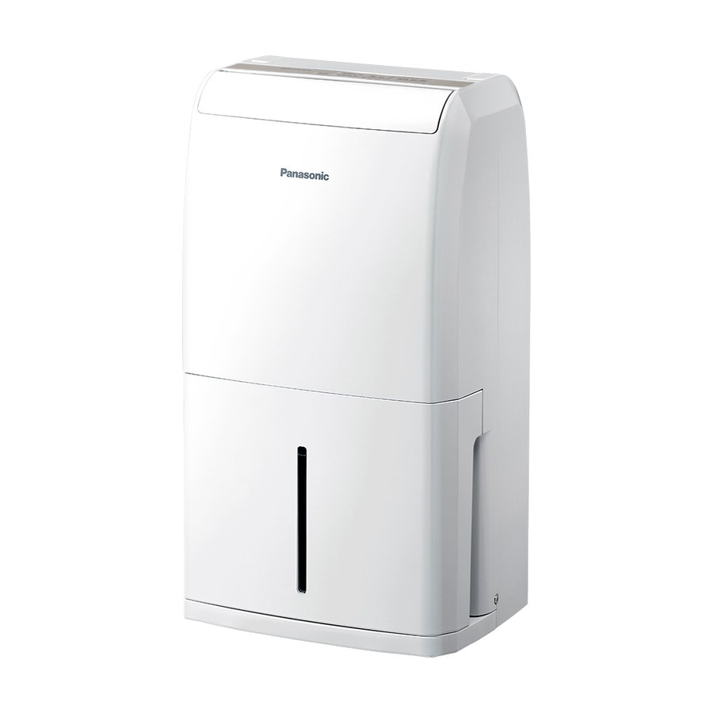

套房除濕機怎麼挑？6–9 公升 5 款比較：EF 值、電費、水箱（2026）
本文怎麼整理。以下依 2026 年 11 月 27 日的品牌官網、Panasonic 型錄與經濟部能源署開放資料整理 5 款 6–9 公升/日除濕機，沒有實機測試，也不比較銷量。官方沒寫的項目一律標「未列」。內容由 AI 協助整理，規格與價格依文中來源核對。
快速結論：先排除不適合的
- NT$4,790–6,990下限為聲寶官網建議售價，上限為台灣松下官方購物商城會員優惠價（查詢日 2026-11-27）
- 6–9 公升/日5 款的標示除濕能力
- 全部 1 級能源效率等級；EF 2.25–2.62
143W 除濕機加 1,200W 電暖器，合計 1,343W、約 12.2A（110V、功率因數取 1）。若兩台的合計最大電流可持續達 3 小時以上，就超過 15A 分路的連續負載上限（12A）。看分路算法。
-
本文價格最低、官網列連續排水
聲寶 AD-S512T｜6 公升/日・111W・約 4–6 坪 不適合 空間超過官網標示約 4–6 坪的人；若使用水箱，容量 2L，1.8L 滿水停機
- 要最輕、最薄
-
空間較大、要 9 公升
聲寶 AD-WA618T｜9 公升/日・EF 2.62・約 10 坪・可接 PVC 管連續排水・平均 40dB 不適合 常搬動（12.4kg），或想壓低功率的人（143W，5 款最高）
-
要國際牌、8 坪標示
Panasonic F-Y12PS｜6 公升/日・108W・DC 馬達 不適合 常搬動的人（官網列 14.5kg，說明書規格表列 13.0kg）；濕度設定與定時功能型錄未列 別買錯 和 F-Y12PM 只差最後一個字母；這款是機械式面板、一般濾網
- 要 LED 面板、關機防霉與連續排水
編號為文章編排順序，不是實機評測排名。
目錄
5 款候選怎麼對照
本站含蝦皮分潤連結，透過連結購買我可能獲得分潤，不影響你的價格
| 商品 | 除濕能力 | EF／功率 | 水箱／排水 | 重量 | 價格 |
|---|---|---|---|---|---|
|
 |
6 L/日（約 4–6 坪） | EF 2.25・111W | 2L（1.8L 滿水停機） 可連續排水 |
9.6kg | NT$4,790 官網建議售價（2026-11-27 查詢） |
|
 |
6 L/日（約 4–6 坪） | EF 2.29・109W | 2.5L（1.9L 滿水停機） 可接 12mm PVC 管連續排水 |
8.9kg | NT$5,490 官網建議售價（2026-11-27 查詢） |
|
 |
9 L/日（27°C／60% RH，約 10 坪） | EF 2.62・143W | 2.8L（2.6L 滿水停機） 可接 PVC 管連續排水 |
12.4kg | NT$6,590 官網建議售價（2026-11-27 查詢） |
|
 |
6 L/日（8 坪） | EF 2.31・108W | 2.5L 說明書列連續排水 |
14.5kg 說明書 13.0kg |
NT$6,190 官方購物商城會員優惠價（2026-11-27 查詢） |
|
 |
6 L/日（8 坪） | EF 2.31・108W | 2.5L 可連續排水 |
13.5kg | NT$6,990 官方購物商城會員優惠價（2026-11-27 查詢） |
查詢日 2026-11-27・編號非排名・點型號看詳細
- 聲寶 AD-S512T NT$4,790 官網建議售價（2026-11-27 查詢） 6 L/日 · EF 2.25 · 111W · 約 4–6 坪 水箱 2L（1.8L 滿水停機） · 9.6kg · 連續排水
- 聲寶 AD-WB512T NT$5,490 官網建議售價（2026-11-27 查詢） 6 L/日 · EF 2.29 · 109W · 約 4–6 坪 水箱 2.5L（1.9L 滿水停機） · 8.9kg · 深 190mm · 可接 PVC 管連續排水
- 聲寶 AD-WA618T NT$6,590 官網建議售價（2026-11-27 查詢） 9 L/日 · EF 2.62 · 143W · 約 10 坪 水箱 2.8L（2.6L 滿水停機） · 12.4kg · 可接 PVC 管連續排水 · 平均 40dB
- Panasonic F-Y12PS NT$6,190 官方購物商城會員優惠價（2026-11-27 查詢） 6 L/日 · EF 2.31 · 108W · 8 坪 水箱 2.5L · 14.5kg（說明書 13.0kg） · 機械式面板 · 說明書列連續排水
- Panasonic F-Y12PM NT$6,990 官方購物商城會員優惠價（2026-11-27 查詢） 6 L/日 · EF 2.31 · 108W · 8 坪 水箱 2.5L · 13.5kg · 說明書列連續排水 · 關機防霉
蝦皮售價依賣場即時變動，以點進去的頁面為準。
EF 為經濟部能源署登錄值（2026-11-27 下載）。AD-WA618T 與 Panasonic 兩款的除濕能力條件，5 款原廠資料都寫 27°C、相對濕度 60%（聲寶兩款 6 公升機見說明書規格表）。噪音值只有聲寶三款說明書列出，Panasonic 兩款未列。Panasonic 兩款保固皆為全機 3 年、壓縮機 5 年。聲寶保固條件見各款說明。
逐款比較
聲寶 SAMPO
AD-S512T
聲寶 SAMPO AD-S512T（6 公升/日，111W）
- 除濕能力
- 6 公升/日（27°C／RH60%，說明書）
- 能效／EF
- 1 級／2.25
- 消耗功率
- 111W
- 適用坪數
- 約 4–6 坪
- 水箱
- 2L（1.8L 滿水停機）
- 尺寸
- 290 × 414 × 230 mm（寬 × 高 × 深）
- 重量
- 9.6kg
- 排水
- 官網列連續排水
- 保固
- 3 年（說明書所附保證書）
- 適用室溫
- 未列
- 噪音值
- 45dB(A)（說明書）
官網規格列 6 公升/日、能源效率 1 級、消耗功率 111W，適用約 4–6 坪；能源署登錄 EF 2.25。官網列出觸控式面板、智慧舒適除濕模式、銀離子濾網、24 小時定時、30~90% 濕度設定、強弱風速、萬向滑輪、自動除霜與連續排水，安全設計 10 項防護。
限制是水箱只有 2L、1.8L 就滿水停機，是 5 款最小；EF 也是 5 款最低。說明書列噪音值 45dB(A)，適用室溫未列。需要連續排水時，可以先看這台。
規格來源：聲寶官網產品頁、規格頁、原廠說明書（含規格頁與保證書）、能源署 EF
聲寶 SAMPO
AD-WB512T
聲寶 SAMPO AD-WB512T（6 公升/日，109W）
- 除濕能力
- 6 公升/日（27°C／RH60%，說明書）
- 能效／EF
- 1 級／2.29
- 消耗功率
- 109W
- 適用坪數
- 約 4–6 坪
- 水箱
- 2.5L（1.9L 滿水停機）
- 尺寸
- 290 × 478 × 190 mm（寬 × 高 × 深）
- 重量
- 8.9kg
- 連續排水
- 說明書第 8 頁列，內徑 12mm PVC 管（需自購）
- 保固
- 3 年（說明書所附保證書）
- 適用室溫
- 未列
- 噪音值
- 48dB(A)（說明書）
6 公升/日、1 級、109W，約 4–6 坪，能源署 EF 2.29。深 190mm、重 8.9kg，是本文 5 款最薄也最輕的一台。官網列出微電腦面板、兒童安全鎖、甲殼素濾網、1–8 小時定時、10 段濕度設定、強弱風速、智慧乾衣模式與橫向滑輪，16 項防護。
說明書列噪音值 48dB(A)，是聲寶三款標示中最高；適用室溫未列，定時最長 8 小時。需要較淺的機身，可以比較這台；擺放時仍要和牆壁、家具保持距離。
規格來源：聲寶官網產品頁、規格頁、原廠說明書（含規格頁與保證書）、能源署 EF
聲寶 SAMPO
AD-WA618T
聲寶 SAMPO AD-WA618T（9 公升/日，143W）
- 除濕能力
- 9.0 公升/日（27°C／60% RH）
- 能效／EF
- 1 級／2.62
- 消耗功率
- 143W
- 適用坪數
- 約 10 坪
- 水箱
- 2.8L（2.6L 滿水停機）
- 尺寸
- 290 × 525 × 240 mm（寬 × 高 × 深）
- 重量
- 12.4kg
- 連續排水
- 說明書第 7 頁列可接 PVC 管
- 保固
- 3 年（依聲寶除濕機系列保證書）
- 適用室溫
- 未列
- 運轉音量
- 平均 40dB（原廠說明書）
本文唯一 9 公升/日的機型，說明書標示約 10 坪，能源署 EF 2.62 是 5 款最高，水箱 2.8L（2.6L 滿水停機）也最大。官網列出自動導風板、兒童安全鎖、甲殼素濾網、夜間模式、1–8 小時定時、7 段濕度設定、3 段風速、智慧乾衣與萬向滑輪，21 項防護。
9 公升/日落在貨物稅減徵 900 元級距（其他 4 款是 500 元）。限制是 143W 為 5 款最高、重 12.4kg。說明書列可接 PVC 管連續排水及平均噪音值 40dB；適用室溫未列。
規格來源：聲寶官網產品頁、規格頁、原廠說明書（含規格頁與保證書）、能源署 EF
Panasonic 國際牌
F-Y12PS
Panasonic 國際牌 F-Y12PS（6 公升/日，108W）
- 除濕能力
- 6 公升/日（27°C／60%）
- 能效／EF
- 第一級／2.31
- 消耗電功率
- 108W
- 適用坪數
- 8 坪
- 年耗電量
- 58 度（型錄）
- 水箱
- 2.5L（正面水箱，型錄）；說明書列 3.1L、約 2.5L 停止
- 尺寸
- 293 × 588 × 264 mm（寬 × 高 × 深）
- 重量
- 14.5kg（官網、型錄）；說明書規格表 13.0kg
- 適用室溫
- 5°C～35°C
- 連續排水
- 說明書第 9 頁列，內徑 15mm 市售塑膠水管
- 保固年限
- 全機 3 年、壓縮機 5 年（家用）
- 運轉音量
- 未列
型錄列 6 公升/日（室溫 27°C、相對濕度 60%）、第一級、EF 2.31、108W，除濕適用 8 坪，年耗電量 58 度；DC 馬達、2.5L 正面水箱、23 項安全裝置，適用室溫 5°C～35°C。面板是機械式，濾網為一般濾網，型錄沒有標關機防霉。
官網與型錄列 14.5kg，是 5 款最重；說明書規格表則列 13.0kg，兩者不一致，買前可向原廠確認。濕度設定與定時功能為型錄未列。運轉音量未列。官網產品頁標「指定通路銷售」，價格以台灣松下官方購物商城的會員優惠價記錄。
規格來源：Panasonic 官網產品頁、官方購物商城、2025-11 除濕機型錄、說明書、Panasonic 保固表
Panasonic 國際牌
F-Y12PM
Panasonic 國際牌 F-Y12PM（6 公升/日，108W）
- 除濕能力
- 6 公升/日（27°C／60%）
- 能效／EF
- 第一級／2.31
- 消耗電功率
- 108W
- 適用坪數
- 8 坪
- 年耗電量
- 58 度（型錄）
- 水箱
- 2.5L（正面水箱）
- 尺寸
- 293 × 530 × 230 mm（寬 × 高 × 深）
- 重量
- 13.5kg
- 適用室溫
- 5°C～35°C
- 連續排水
- 說明書第 9 頁列使用方法
- 保固年限
- 全機 3 年、壓縮機 5 年（家用）
- 運轉音量
- 未列
除濕能力、功率、EF、適用坪數、年耗電量、DC 馬達、2.5L 正面水箱與適用室溫都和 F-Y12PS 相同。型錄上的差別是：F-Y12PM 比 F-Y12PS 矮 58mm、輕 1kg（13.5kg；兩款說明書規格表分別列 13.5kg、13.0kg），深度 230mm（F-Y12PS 為 264mm）；型錄列 LED 面板、超密度濾網、「關機防霉」及單向輪，安全裝置 25 項（F-Y12PS 為 23 項）。
台灣松下官方購物商城會員優惠價比 F-Y12PS 高 NT$800（查詢日 2026-11-27）。濕度設定與定時功能為型錄未列。說明書列連續排水的使用方法；運轉音量未列。官網產品頁標「指定通路銷售」。搜尋時注意型號尾碼，別和 F-Y12PS 弄混。
規格來源：Panasonic 官網產品頁、官方購物商城、2025-11 除濕機型錄、說明書、Panasonic 保固表
適合誰
- 約 4–6 坪、預算最低，且要官網列連續排水：聲寶 AD-S512T（若使用水箱，容量 2L，1.8L 滿水停機）。
- 想挑最輕最薄：聲寶 AD-WB512T（8.9kg、深 190mm；說明書列可接內徑 12mm PVC 管連續排水）。
- 空間約 10 坪、想要 9 公升/日與較大水箱：聲寶 AD-WA618T（EF 2.62、2.8L、可接 PVC 管連續排水；原廠列平均 40dB）。
- 想要國際牌 8 坪標示與 DC 馬達、定點擺放不常搬：Panasonic F-Y12PS（官網列 14.5kg、機械式面板；說明書列連續排水）。
- 想要較矮、較淺的機身與 LED 面板：Panasonic F-Y12PM（說明書列可連續排水；2026-11-27 官方購物商城會員優惠價比 F-Y12PS 高 NT$800）。
Panasonic 兩款的家庭用保固皆為全機 3 年、壓縮機 5 年。聲寶三款的說明書（AD-S512T、AD-WB512T、AD-WA618T）都附保證書，家用全機 3 年，第 2、3 年為零組件免費檢修，不含遙控器及不更換零件的服務（如調整、說明）；營業場所使用為 1 年。登錄與適用條件見原廠保證書。
常見問題
這 5 款都能申請貨物稅減徵嗎？退多少？
5 款都是能源效率 1 級。依財政部稅務入口網說明，買能效 1 或 2 級新除濕機，可在發票次日起 6 個月內申請貨物稅減徵，減徵措施實施至 2029-12-31，核准以國稅局為準。6 公升/日的 4 款屬未滿 9 公升級距，退 500 元；9 公升/日的 AD-WA618T 屬 9 以上未滿 12 公升級距，退 900 元。
F-Y12PS 和 F-Y12PM 差在哪？
除濕量 6 公升/日、108W、EF 2.31、8 坪、年耗電量 58 度、DC 馬達、2.5L 正面水箱與 5°C～35°C 適用室溫都一樣。型錄上 F-Y12PM 比 F-Y12PS 矮 58mm、輕 1kg（說明書規格表則列 13.5kg 與 13.0kg），深度 230mm（F-Y12PS 為 264mm），型錄列 LED 面板、超密度濾網、「關機防霉」及單向輪，安全裝置 25 項（F-Y12PS 23 項）。F-Y12PM 的台灣松下官方購物商城會員優惠價比 F-Y12PS 高 NT$800（查詢日 2026-11-27）。
這 5 款有召回紀錄嗎？為什麼沒放 F-YV32NN 或 FUJIMARU？
2026-11-27 查標檢局商品召回訊息，2026 年沒有新的除濕機召回，本文 5 款都不在名單。Panasonic F-YV32NN 在能源署資料是 16 公升/日，超出本文選品上限（未滿 12 公升/日；實際入選為 6–9 公升/日）；FUJIMARU 是燦坤自有品牌，沒找到品牌官網規格頁，所以沒放（標檢局名單裡的 FUJIMARU 回收是 FJ-5902、FJ-5902BD、FJ-5906 等 2006–2012 年產製的舊型號）。
資料與更新紀錄
- 最後核對日
- 核對範圍
- 2026-11-28 下載聲寶 AD-S512T、AD-WB512T 與 Panasonic F-Y12PS 單款說明書，核對連續排水、除濕條件、噪音值、重量與保證書。連續排水、噪音、除濕條件及保固：2026-11-27 查原廠規格、說明書與保固表。分路負載、電價、電鍋規格及用電安全：同日核對法規、台電、大同與標檢局。
- 本次更新
- 在分路算例加上電鍋比較連結，移除大同預覽連結，補上 AI 協助註記、封面情境示意標籤與發布日期，調整圖片載入。規格與價格沿用原查詢紀錄。
- 這次改了什麼
- 2026-11-28 依單款說明書補上 AD-WB512T、F-Y12PS 的連續排水與管徑，刪掉快速結論的「待確認」行；補上聲寶兩款 6 公升機的除濕條件與噪音值；註明 F-Y12PS 官網 14.5kg 與說明書 13.0kg 不一致。2026-11-27 更正排水、噪音、適用坪數與保固，補上夏月電費、分路電流與使用提醒，刪除快速結論的安全提醒句與兩行「別買錯」，並移除目錄捲動高亮的 JS。
- 原查詢紀錄
- 2026-11-27 首次發布時查品牌官網、型錄與官方商城的規格、價格，下載能源署 EF 資料，並查標檢局召回公告。本輪沿用原價格，庫存未查。
- 資料來源
- 聲寶官網產品頁與規格表；Panasonic 官網、官方購物商城與 2025-11 除濕機型錄；經濟部能源署除濕機能源效率分級標示登錄資訊；財政部稅務入口網；標準檢驗局《標準與檢驗月刊》171 期；標準檢驗局商品召回訊息；台電電價表；聲寶 AD-S512T 官網規格；聲寶 AD-WA618T 說明書及系列保證書；Panasonic F-Y12PM 說明書；聲寶 AD-S512T 說明書；聲寶 AD-WB512T 說明書；Panasonic F-Y12PS 說明書；Panasonic 保固表；標檢局用電安全提醒。